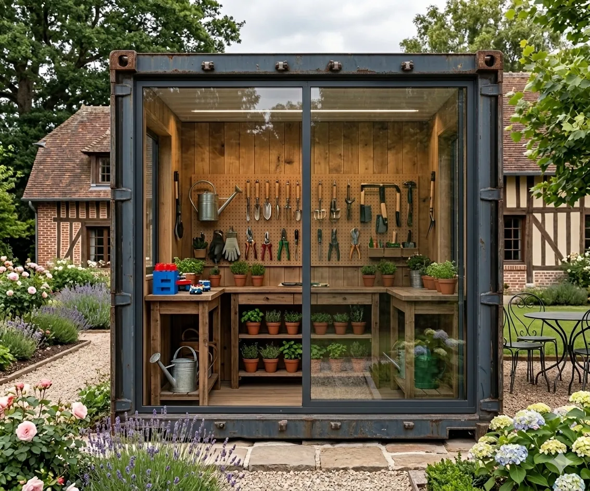
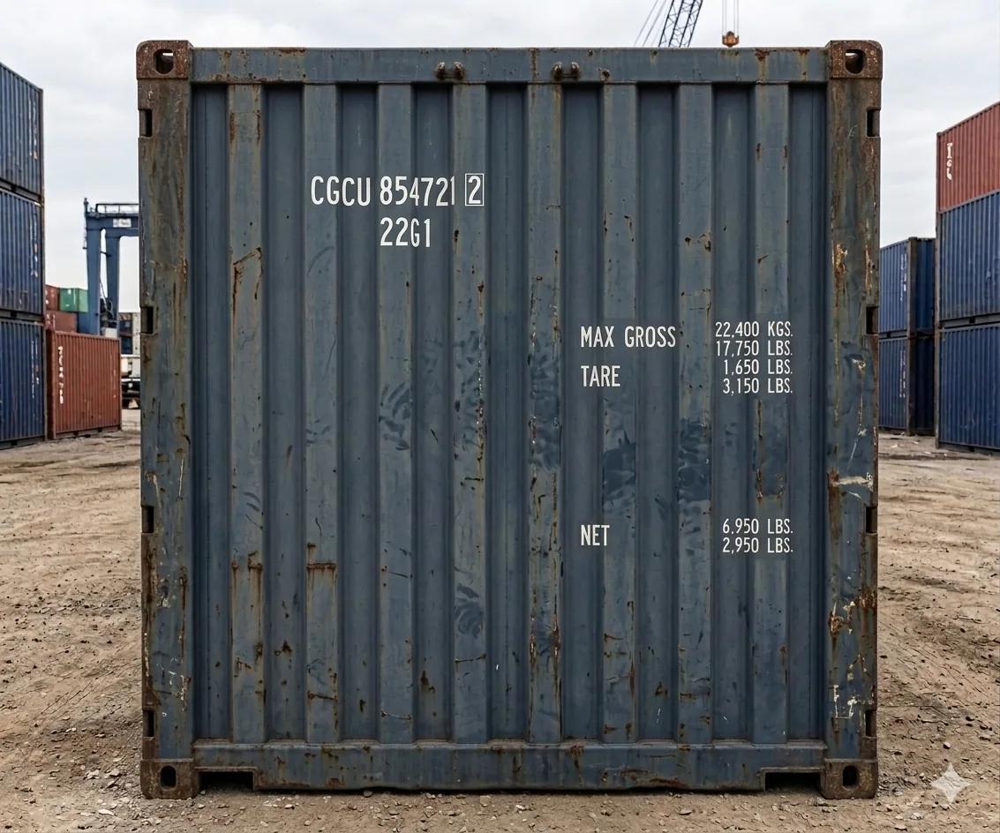
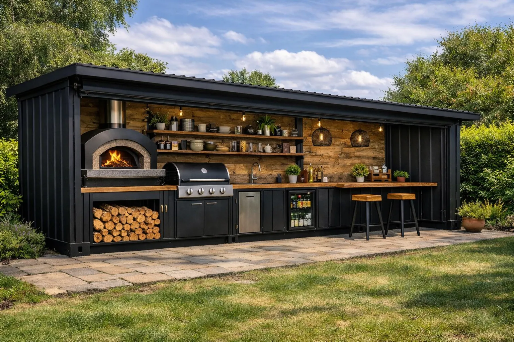
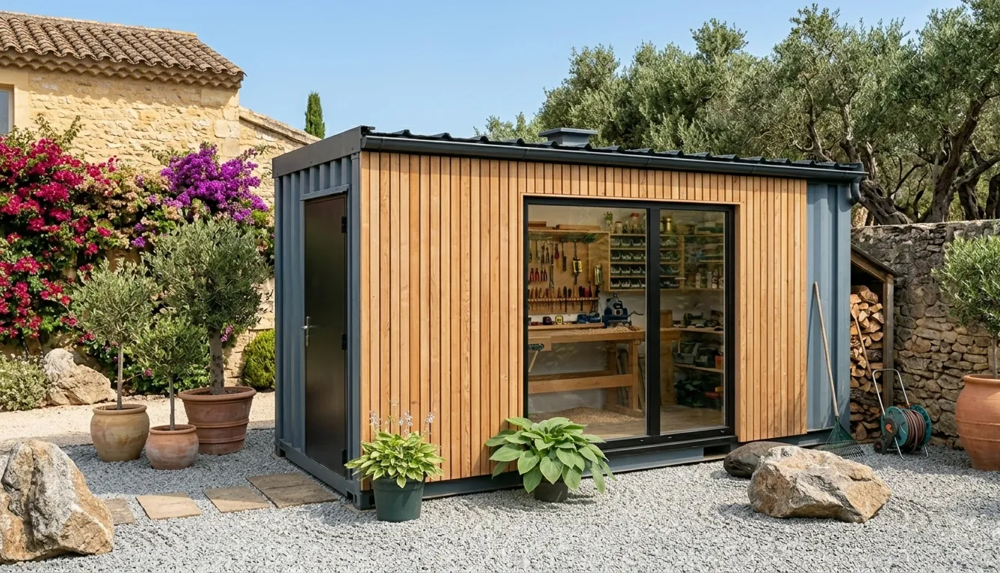
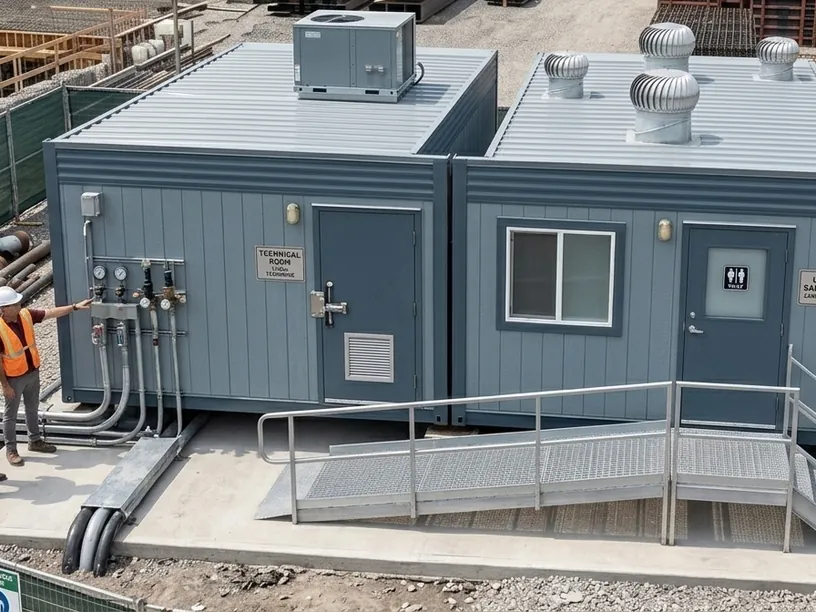

Bureau & télétravail
Bureau de jardin
Un espace de travail isolé du bruit de la maison, chauffé, lumineux et raccordé au réseau électrique.
Demander ce type d'aménagement →Bureau, studio, pool house ou atelier : nous livrons un conteneur isolé, électrifié et fini, prêt à être utilisé le jour de la pose. Conception et fabrication dans notre atelier de Limay.


Vous n'avez aucun corps de métier à coordonner : nous prenons la caisse brute et nous vous rendons un espace terminé. Isolation, second œuvre, finitions et mobilier sont réalisés dans notre atelier, puis l'ensemble est posé chez vous.
Chaque aménagement est dessiné pour un usage précis. Retrouvez celui qui ressemble à votre projet, nous partons de là.
Un espace de travail isolé du bruit de la maison, chauffé, lumineux et raccordé au réseau électrique.
Demander ce type d'aménagement →
Logement d'appoint, chambre d'amis ou extension : coin nuit, salle d'eau et kitchenette intégrés.
Demander ce type d'aménagement →
Rangement, douche et coin détente au bord de la piscine, avec une façade largement ouverte.
Demander ce type d'aménagement →
Plan de travail, évier, électricité renforcée et ouverture comptoir pour recevoir ou vendre.
Demander ce type d'aménagement →
Établi, rangements, éclairage LED et prises renforcées pour travailler à l'abri toute l'année.
Demander ce type d'aménagement →
Douches et WC raccordables, revêtements lavables, ventilation et production d'eau chaude.
Demander ce type d'aménagement →Décrivez votre usage en 2 minutes, nous revenons vers vous avec une proposition chiffrée sous 48h.
Usage, surface, lieu d'installation et budget. Un échange téléphonique suffit pour cadrer le projet.
Nous vous proposons un agencement, les finitions et le prix détaillé, poste par poste, sous 48h.
Découpes, isolation, électricité, plomberie et finitions sont réalisées à Limay, à l'abri des intempéries.
Étude d'accès puis dépose au camion-grue, même en accès difficile. Vous récupérez un espace utilisable immédiatement.
Cinq points qui font la différence entre un conteneur simplement habillé et un espace réellement confortable.
Décrivez votre usage et vos finitions souhaitées : vous recevez un devis détaillé sous 48h, sans engagement.